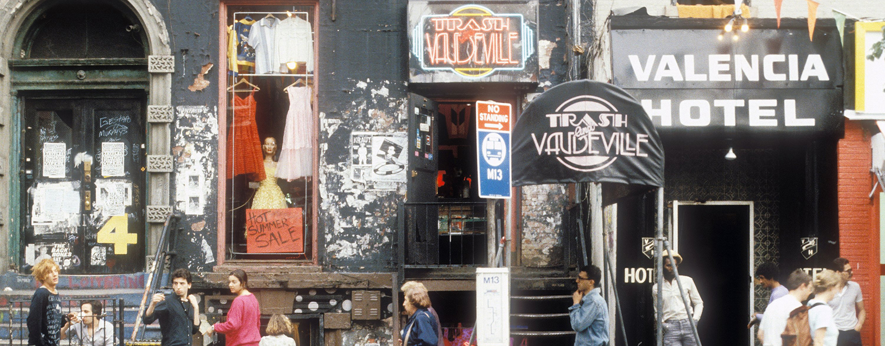

"GNR"
Guns and Roses
Guns N' Roses is an American hard rock band from Los Angeles formed in 1985. The lineup, when first signed to Geffen Records in 1986, consisted of vocalist Axl Rose, lead guitarist Slash, rhythm guitarist Izzy Stradlin, bassist Duff McKagan, and drummer Steven Adler. The current lineup consists of Rose, Slash, McKagan, keyboardists Dizzy Reed and Melissa Reese, guitarist Richard Fortus and drummer Frank Ferrer. The band has released six studio albums, accumulating sales of more than 100 million records worldwide, including shipments of 45 million in the United States, making Guns N' Roses one of the world's best-selling bands of all time.After more than a decade of work and several lineup changes, Guns N' Roses released the long-awaited album Chinese Democracy (2008) which, at an estimated $14 million in production costs, is the most expensive rock album to ever be produced in music history. It debuted at number three on the Billboard 200 but undersold industry expectations, despite mostly positive critical reception. Classic era members Slash and McKagan both rejoined the band in 2016.
Guns N' Roses has been credited with reviving the mainstream popularity of rock music, at a time when popular music was dominated by dance music and glam metal. Its late 1980s and early 1990s years have been described as the period in which the group brought forth a "hedonistic rebelliousness" reminiscent of the early Rolling Stones, a reputation that had earned the group the nickname "the most dangerous band in the world". The band's classic lineup, along with later members Reed and drummer Matt Sorum, was inducted into the Rock and Roll Hall of Fame in 2012, in its first year of eligibility.
Metallica
Metallica is an American heavy metal band formed in Los Angeles, California. The band was formed in 1981 when vocalist/guitarist James Hetfield responded to an advertisement posted by drummer Lars Ulrich in a local newspaper. Metallica's current line-up comprises founding members Hetfield and Ulrich, longtime lead guitarist Kirk Hammett and bassist Robert Trujillo. Guitarist Dave Mustaine and bassists Ron McGovney, Cliff Burton and Jason Newsted are former members of the band.Metallica has released ten studio albums, four live albums, five extended plays, 26 music videos, and 37 singles. The band has won eight Grammy Awards and six of its albums have consecutively debuted at number one on the Billboard 200. The band's eponymous 1991 album has sold over 16 million copies in the United States, making it the best-selling album of the SoundScan era. Metallica ranks as one of the most commercially successful bands of all time, having sold over 110 million records worldwide.[1] Metallica has been listed as one of the greatest artists of all time by many magazines, including Rolling Stone, which ranked them 61st on its list of The 100 Greatest Artists of All Time.[2] As of December 2012, Metallica is the third-best-selling music artist since Nielsen SoundScan began tracking sales in 1991, selling a total of 54.26 million albums in the U.S.[3][4] Metallica collaborated over a long period with producer Bob Rock, who produced four of the band's studio albums between 1990 and 2003 and served as a temporary bassist during the production of St. Anger. In 2012, Metallica formed the independent record label Blackened Recordings and took full ownership of its albums and videos. The band is currently promoting Hardwired... to Self-Destruct, which was released on November 18, 2016.

"Master of Puppets"

"Thrash Metal"
Anthrax
Anthrax is an American heavy metal band from New York City, formed in 1981 by guitarist Scott Ian and bassist Dan Lilker. The group was considered one of the leaders of the thrash metal scene during the 1980s. Of the "Big Four" thrash metal bands (the others being Metallica, Megadeth and Slayer), Anthrax were the only band from the East Coast. As of 2016, the band has released 11 studio albums, several other albums, and 26 singles, including collaborating on a single with American hip hop group Public Enemy. According to Nielsen SoundScan, Anthrax sold 2.5 million records in the United States from 1991 to 2004, with worldwide sales of 10 million.Noted for its live performances, Anthrax signed with the independent label Megaforce Records, which released the band's debut studio album in 1984. Lilker soon left the band to form Nuclear Assault, and was replaced by roadie Frank Bello. Vocalist Neil Turbin was replaced after two years by Matt Fallon who was then subsequently replaced in 1985 by Joey Belladonna. With a new lineup, the band recorded Spreading the Disease (distributed by Island Records) in 1985. Anthrax's third album, Among the Living, was released in 1987 to critical praise. The band experienced another lineup change in 1992, when John Bush replaced Belladonna as lead vocalist. Sound of White Noise was released the following year, peaking at number seven on the Billboard 200. Studio recordings during the 1990s saw the band, influenced by other genres, experimenting with its sound.
Anthrax's lineup has changed several times over their career. The band has had a number of vocalists including Neil Turbin, Joey Belladonna, Dan Nelson and John Bush. Founding member Scott Ian and early arrival Charlie Benante, who joined Anthrax in 1983, are the only band members to appear on every album. Bassist Frank Bello has played on every album, except for the band's debut Fistful of Metal, which featured Dan Lilker. In 2010, Joey Belladonna returned to Anthrax and has since recorded two more studio albums with the band, Worship Music (2011) and For All Kings (2016).